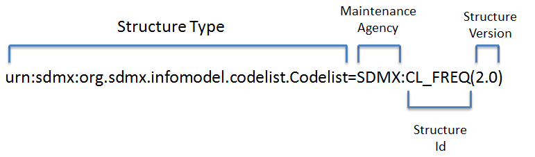
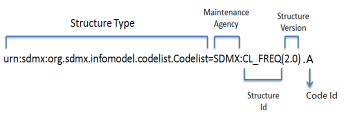

Struktur SDMX
Terminologi
Maintainable
Semua struktur yang di- submit atau dijadikan kueri dari registri adalah struktur yang maintainable. Maintainable mungkin saja berisi sub-struktur, tetapi maintainable adalah tingkatan tertinggi dari containership. Maintainable tidak dapat digunakan ke dalam jenis struktur lain dan strukturnya tidak dapat di- submit ke registri kecuali mereka adalah maintainable atau didefinisikan ke dalam maintainable. Hal ini mungkin merupakan pernyataan yang agak kompleks dan akan lebih mudah jika dijelaskan menggunakan contoh secara nyata:
Daftar kode adalah struktur yang maintainable dan dengan demikian dapat di- submit ke Fusion Registry;
Daftar kode dapat berisi kode yang tidak maintainable.
Daftar kode tidak memiliki tipe struktur parent dan tidak dapat berisi Daftar Kode lainnya;
Kode tidak dapat di- submit ke registri dengan sendirinya. Mereka harus didefinisikan ke dalam Daftar Kode;
Jadi, struktur yang maintainable dapat dianggap sebagai wadah informasi. Informasi tidak bisa di- maintain di luar parent-nya yang maintainable, maka istilah itu disebut maintainable.
Struktur yang maintainable memiliki referensi ke maintenance agency yang bertindak sebagai ‘pemilik’ struktur. Hal tersebut merupakan mandatory version, secara bawaan menjadi 1.0 dan mandatory identifier. Kombinasi dari jenis struktur, Id agensi, Id, dan versi dapat digunakan untuk mengidentifikasi struktur yang maintainable secara unik di SDMX.
Semua jenis struktur yang maintainable dalam SDMX tercantum di bawah ini:
Menampilkan model UML dari Tipe Struktur SDMX.
Identifiable
Struktur yang identifiable adalah struktur yang dapat diidentifikasi secara unik di dalam SDMX dengan menggunakan URN.
URN (Uniform Resource Name) adalah bentuk khusus dari URI (Uniform Resource Identifier). URI adalah serangkaian karakter yang digunakan untuk mengidentifikasi nama dari web resource. URL digunakan untuk mengidentifikasi artefak SDMX tertentu secara unik.
SDMX mendefinisikan sintaks URN dan setiap URN dibangun dengan menggabungkan jenis struktur, lembaga pemeliharaan, versi struktur, dan id struktur.
Contoh URN untuk Daftar Kode diberikan di bawah ini:
Memperlihatkan sintaks URN dengan struktur yang maintainable.
Semua struktur yang maintainable adalah struktur yang identifiable, karena semuanya memiliki jenis struktur, id agensi, id, dan versinya masing-masing. Ini berarti setiap struktur yang maintainable dapat diidentifikasi secara unik di dalam SDMX menggunakan sintaks URN.
Ada juga struktur yang dapat diidentifikasi di dalam SDMX tetapi tidak termasuk maintainable. Jika struktur tersebut termasuk identifiable, maka pasti memiliki mandatory id. Jika struktur tersebut tidak maintainable, maka ia harus selalu berada di dalam cakupan maintainable. Oleh karena itu, maintainable parent digunakan untuk bisa mendapatkan URN. Contoh identifiable yang tidak termasuk maintainable adalah Kode yang berada di dalam Daftar Kode. Gambaran sintaks URN untuk sebuah kode ditunjukkan di bawah ini. Cukup sederhana untuk melampirkan/memasangkan id kode ke akhir Daftar Kode dari URN.
Memperlihatkan sintaks URN untuk struktur yang identifiable.